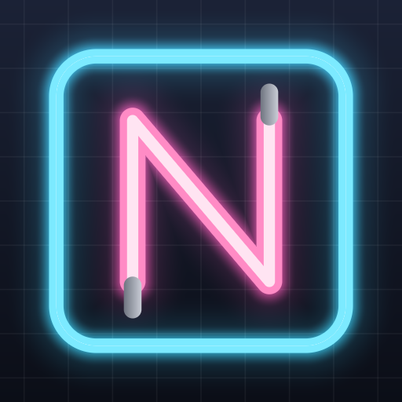
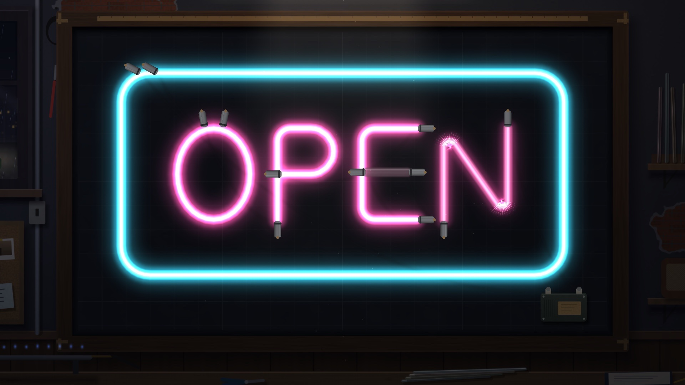

iPhone · iPad · Android
Neon Workshop
A rainy night, a warm workshop, and a street waiting for its lights. Bend glass over a chalk pattern, wire the transformers, flip the switch and watch the sign come alive.

- Bend real-feeling glass tubes with pen, line and arc tools; points snap to the pattern
- Wire transformer chains and find faults with the power test
- Every sign gets its own reveal as the room dims and the tubes bloom into colour
- No ads, no in-app purchases, no data collection, plays fully offline
Türkçe
Yağmurlu bir gecede sıcak bir atölye: tebeşir desenin üzerinde cam tüpleri bük, trafoları bağla, şalteri kaldır ve tabelanın canlanışını izle. Reklam yok, uygulama içi satın alma yok, tamamen çevrimdışı.
Privacy Policy / Gizlilik · Terms of Use / Kullanım Koşulları · Support / Destek